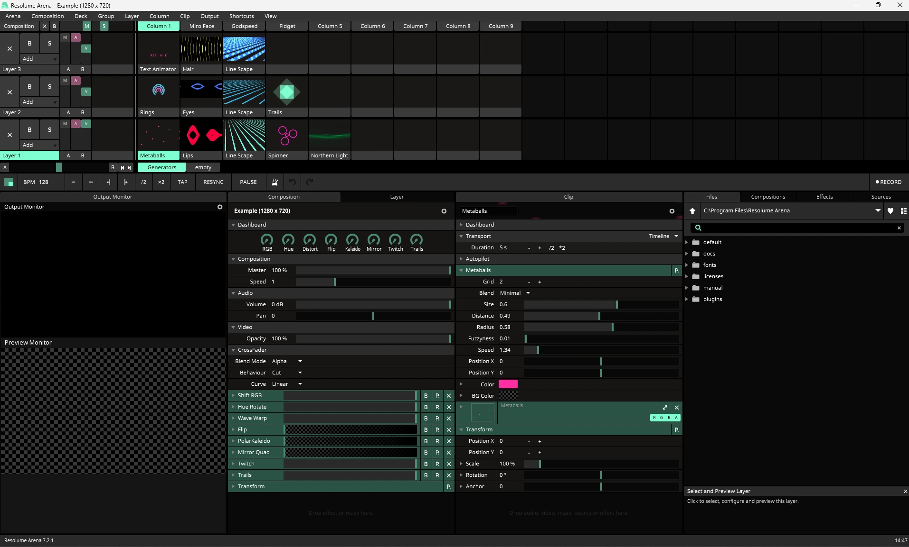
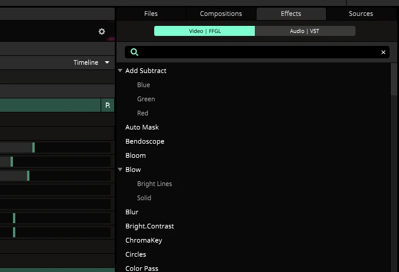
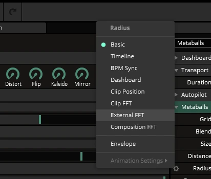
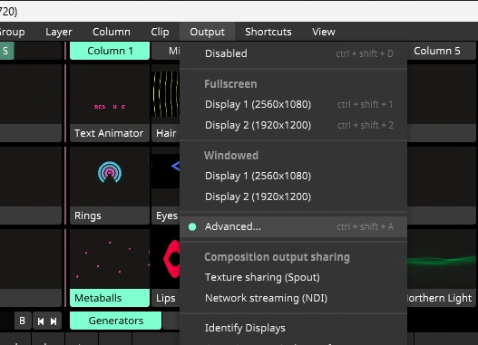
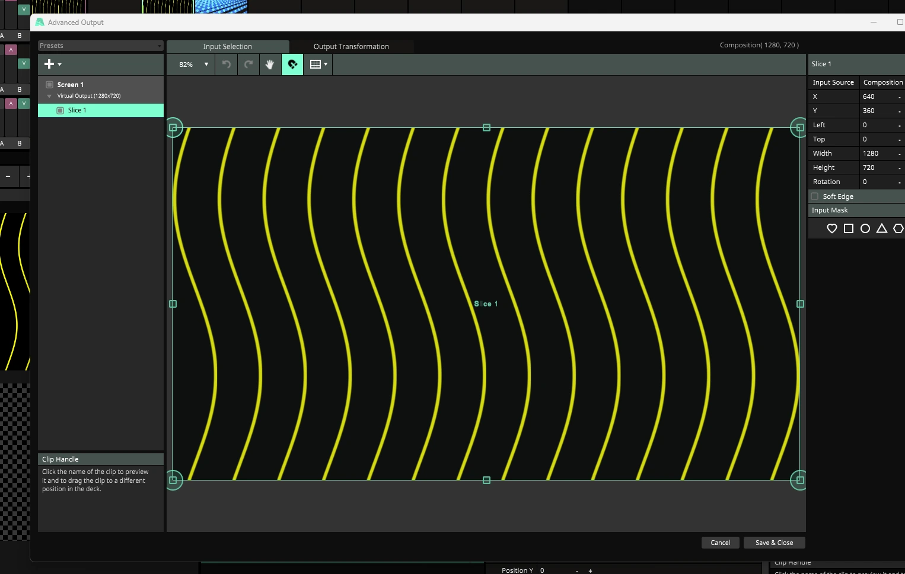
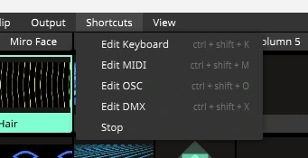
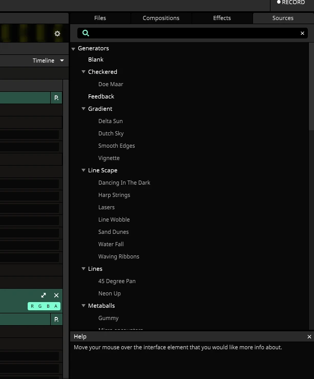
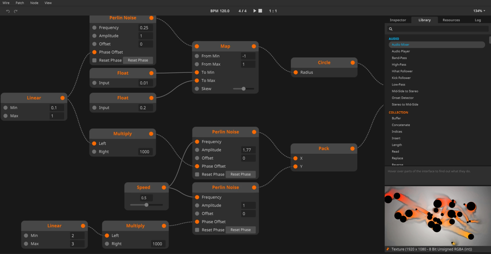

Live-перформанс в Resolume
В живом выступлении видеоряд можно исполнять: выбирать материал, менять плотность, сочетать слои и отвечать на происходящее на сцене. Resolume позволяет работать с этими решениями во время показа. Подготовленная композиция становится инструментом, которым управляет исполнитель.
Аудиовизуальный перформанс
В аудиовизуальном перформансе звук и изображение образуют общую композицию во времени. Их связь может строиться на ритме, фактуре, жесте исполнителя, контрасте или общей драматургии. Изображение не обязано повторять каждый удар музыки.
Представим короткий сет из трёх частей: редкие линии и тихий звук, накопление слоёв, затем резкое освобождение пространства. Для каждой части заранее подготовлены материалы и допустимые способы перехода. Во время исполнения автор выбирает момент и степень изменения.
Дословная аудиореакция быстро становится однообразной, если все параметры двигаются одинаково. Можно связать низкие частоты с крупной формой, оставить мелкий рисунок под ручным управлением и дать общему переходу более медленный ритм. Это художественный выбор, а не обязательная настройка программы.
Композиция, слои и клипы
Композиция хранит общую структуру проекта и настройки результата. Слои позволяют сочетать изображения, клипы содержат отдельные источники. Колонки удобно использовать для запуска подготовленных сочетаний клипов. Деки помогают организовать наборы материала.

При сборке сета отделяйте роли: фон, основной образ, акцент, типографика. Не обязательно заполнять все слои постоянно. Пауза и пустое пространство помогают увидеть изменение.
Эффект можно применить к клипу, слою, группе или всей композиции. Если изменить цвет на уровне композиции, преобразование затронет общий результат. На уровне клипа оно относится только к этому источнику. Выбор уровня важен для управляемости сета.

Ритм, звук и управление
| Способ | Что управляет изображением | Когда полезен |
|---|---|---|
| Ручное управление | Действия исполнителя | Акценты, импровизация, переходы между частями |
| BPM Sync | Темп и доли | Регулярное движение в музыкальной сетке |
| Audio FFT | Выбранная область спектра звука | Изменения от звуковой энергии |
| Таймкод | Временная позиция | Повторяемая синхронизация с подготовленным шоу |
BPM Sync задаёт движение в долях. FFT анализирует звук и позволяет использовать выбранные частоты для управления параметром. Сильный сигнал в низком диапазоне не равен автоматическому определению темпа: эти способы решают разные задачи.
Для External FFT сначала выбирают аудиоустройство и входные каналы в настройках звука. У параметра включают нужный FFT-источник, выбирают диапазон частот и настраивают Gain и Fall. Gain влияет на чувствительность, Fall на спад после пика. Ограничьте диапазон параметра, чтобы реакция оставалась читаемой.

При работе с микрофоном система слышит и музыку, и помещение. Прямой сигнал от источника даёт другой результат. Проверяйте реакцию с тем звуком, который будет на площадке, включая тихие участки и паузы.
Материал и производительность
Размеры файлов, разрешение и число одновременно работающих эффектов влияют на стабильность. Для подготовленных видео Resolume предлагает кодек DXV и конвертер Alley. Проверяйте материалы в проекте заранее: большой файл не обязательно даст заметно лучший результат на вашем экране.
Сохраняйте исходники отдельно от подготовленных файлов для показа. Называйте клипы по роли и характеру, чтобы во время исполнения не искать «final_final_2».
Вывод и маппинг
Изображение композиции и его расположение в физическом пространстве являются разными задачами. Advanced Output распределяет части изображения по выходам и позволяет настраивать их под поверхности. Полный набор возможностей маппинга относится к Arena; Avenue и Arena не стоит считать одинаковыми по функциям вывода.


Слайс определяет область изображения, которую выводят на поверхность. На площадке уточняют размеры, положение, маски и деформацию. Геометрическая настройка не исправит неверно выбранные разрешение, яркость проектора или положение экрана.
Что передают протоколы
Управляющий сигнал, видео и временная позиция требуют разных способов передачи. Сначала определите, какие данные нужны второму устройству, и только затем выбирайте соединение.
| Соединение | Назначение |
|---|---|
| MIDI | Кнопки, фейдеры и другие управляющие сообщения |
| OSC | Адресованные управляющие сообщения между приложениями |
| NDI | Передача видео по сети |
| Spout / Syphon | Обмен изображением между совместимыми приложениями на одном компьютере |
| SMPTE | Временная позиция для синхронизации поддерживаемых клипов в Arena |
| Art-Net / DMX | Управление совместимым световым оборудованием; возможности зависят от настройки Arena |


DMX Output в Arena может переводить цвет и яркость пикселей в управляющие значения для световых приборов через Art-Net. Это не обещание автоматической настройки любого прибора: нужны соответствующие профили, адресация и согласование со световой системой.
Как читать аудиовизуальную работу
Изображение может следовать за звуком, спорить с ним или существовать в другом масштабе времени. Быстрые музыкальные события можно поддержать короткими вспышками, а длинную фразу постепенным изменением пространства. Если на каждый удар приходится одинаковая реакция, связь быстро становится предсказуемой.
В ролике ATOM_INFINITE_ROOM ниже обратите внимание на масштаб пространства и повтор. В Entre fer et mer сравните характер поверхностей и движение. Это разбор результата: точную схему управления и используемый софт нельзя восстановить только по монтажу ролика.
Что здесь является главным событием: смена формы, цвет, движение камеры или пауза? Что останется от выразительности, если выключить звук? А что потеряется, если заменить музыку, сохранив изображение?
Пауза как часть композиции
Тишина и почти неподвижный кадр могут подготовить сильный переход. Плотность изображения тоже имеет диапазон: пустое поле, один объект, несколько слоёв, заполненное пространство. Живой сет интереснее, когда исполнитель умеет менять не только эффект, но и количество происходящего.
Согласованность звука и видео не требует постоянного совпадения. Можно оставить форму устойчивой и менять её освещение, поддержать только басовую линию или один раз подчеркнуть кульминацию. Выбор связи является частью авторского решения.
Wire: собственные источники и эффекты
Wire является отдельной узловой средой семейства Resolume. В ней создают источники, эффекты и режимы наложения для Arena и Avenue. Визуальная сеть описывает, как данные проходят через операции; исполнитель получает готовый инструмент с понятными параметрами.

Например, можно построить источник из повторяющихся полос и открыть наружу три параметра: плотность, скорость и контраст. Эти параметры станут частью управления в Resolume. Внутреннюю структуру патча не нужно менять во время сета.
Для эффекта входом служит изображение, которое патч преобразует и передаёт дальше. Для источника картинка создаётся внутри сети. Сначала определите роль патча, затем подберите узлы входа и выхода. Типы соединяемых данных должны быть совместимы.
При интеграции названия входных параметров и их диапазоны формируют интерфейс управления. Полезно ограничить значения и подготовить несколько пресетов. Spectrum-вход позволяет использовать спектральные данные из Resolume, когда патч должен реагировать на звук.
Патч как музыкальный инструмент
У источника в Wire полезно различать внутреннюю конструкцию и управление на сцене. Десятки внутренних параметров могут свестись к трём выразительным ручкам: плотности, деформации и скорости. Диапазон каждой должен оставаться полезным на всём ходе контроллера.
Пример задумки: источник рисует сетку; одна ручка меняет число повторов, вторая изгибает поле, третья задаёт движение. Низкочастотный сигнал может слегка усиливать деформацию, но ручное управление остаётся у исполнителя. Это проектная идея, а не готовый патч с гарантированными названиями узлов.
Разница между пресетом и инструментом проявляется в переходах. Два красивых крайних состояния мало полезны, если середина выглядит случайно. Какой параметр можно менять непрерывно, а какой лучше переключать между сценами?
Согласование ролей в выступлении
| Роль | Что контролирует | О чём договаривается |
|---|---|---|
| Музыкант | Звук и развитие музыкальной формы | Опорные моменты, паузы, возможная импровизация |
| Визуальный исполнитель | Слои, переходы, выразительные параметры | Что следует музыке и что развивается независимо |
| Технический оператор | Сигналы, выходы, состояние оборудования | Сценарий запуска, резерв и восстановление |
Один человек может выполнять несколько ролей, но сами задачи остаются разными. Подготовленный видеоклип и генеративный источник могут сосуществовать в одной композиции. Важно, кто и по какому сигналу переводит работу в следующий этап.
Подготовка к живому показу
Репетиция должна проверять не только красивый фрагмент, но и весь ход выступления: начало, паузы, переходы, конец и возвращение к спокойному состоянию. Предусмотрите простой резервный образ, который можно включить при проблеме с внешним сигналом.
Исполнитель должен понимать, какие параметры он контролирует вручную, какие следуют за музыкой и какие работают по времени. Чем яснее эти роли, тем больше внимания остаётся на композицию выступления.
Документация: анимация параметров, Advanced Output, DMX Output, SMPTE, Wire, узлы Wire, интеграция с Resolume. Названия элементов интерфейса могут различаться между версиями.